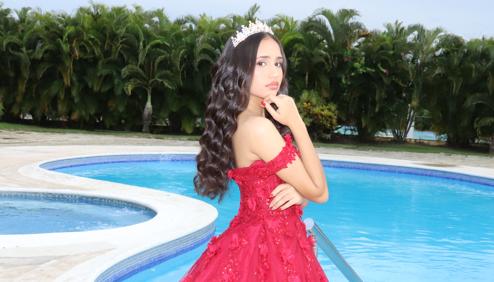
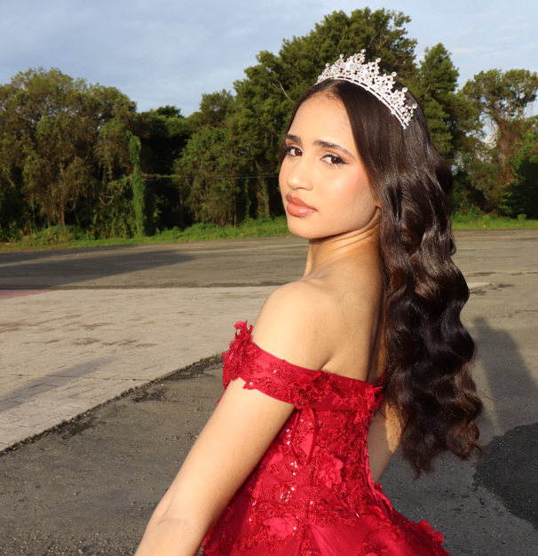
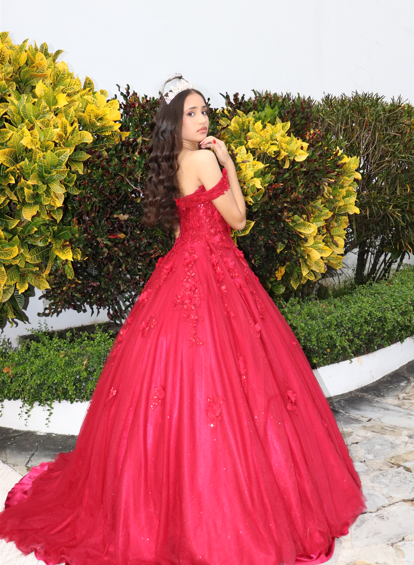
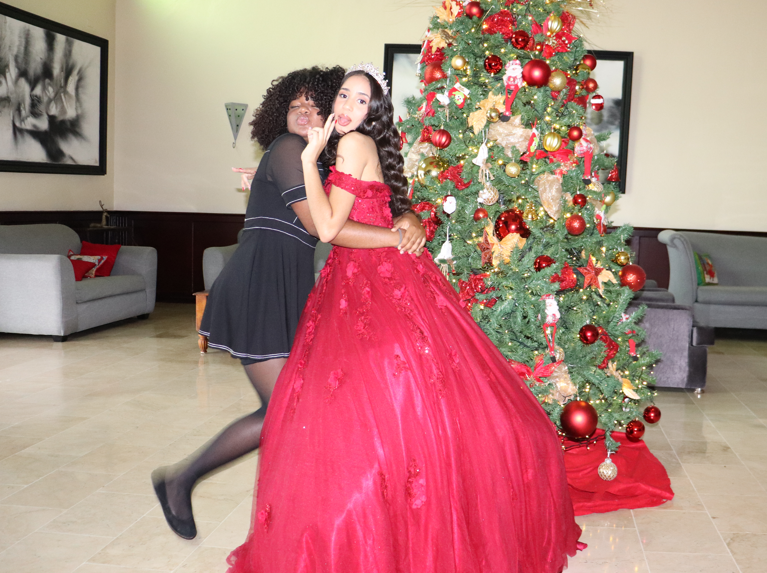
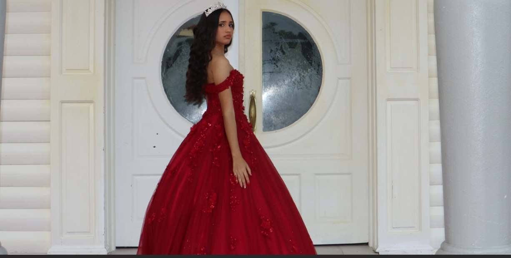
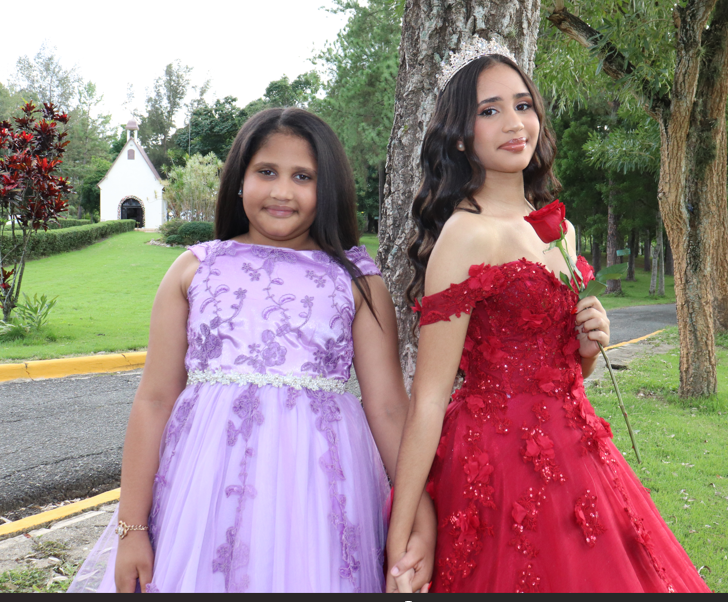

UN POQUITO SOBRE MÍ
Conociendo un poquito más sobre mí
Hola, soy Chary. Bienvenidos a mi pequeño espacio, donde quiero compartir un poquito de quién soy, mis gustos, mis recuerdos y las cosas que forman parte de mi vida.
Pequeños momentos que me encanta guardar.

Una foto que representa un poquito de mi personalidad ♡

Me encanta guardar momentos 🎀

Una parte de mí que me gusta compartir con los demás 💗

Los pequeños momentos también pueden convertirse en grandes recuerdos ✨

Ser yo misma es una de las cosas que más valoro ♡

Esta soy yo, con mis gustos, mis sueños y mi esencia 🎀
Soy una persona alegre, cariñosa, sensible y muy positiva, aunque no siempre me sale todo bien. Me gusta compartir con las personas que quiero y disfrutar de los pequeños momentos. No me gusta que me traten mal.
También me considero una persona creativa. Me gustan las fotos, ser yo misma, la moda y las cosas que me permiten expresarme acerca de mi personalidad.
A veces puedo ser un poco reservada, pero cuando tengo confianza con alguien soy muy cariñosa y divertida. Siempre intento mejorar y seguir adelante con mis metas sin importar lo que pase.
Algunas de las cosas que disfruto.
Me gusta escuchar música porque muchas canciones pueden expresar lo que siento.
Me encanta tomar fotos y guardar recuerdos de momentos especiales de mí o mis cercanos.
Me gusta la ropa, los diferentes estilos y poder expresar mi personalidad a través de ellos.
Si quieres conocer un poquito más de mis vibes, puedes visitar mi Instagram.
Visitar mi InstagramUna canción que me gusta mucho es "Love in the Dark" de Adele.
Me gusta porque transmite muchas emociones y es una canción con la que puedo identificarme.
Otro de los contenidos que disfruto ver.